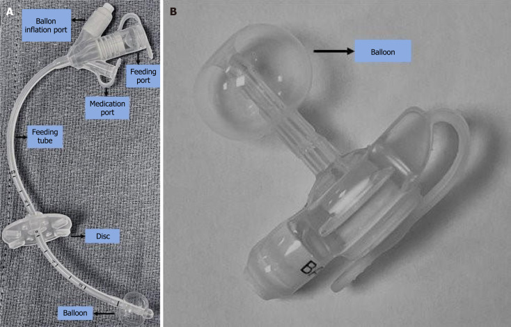
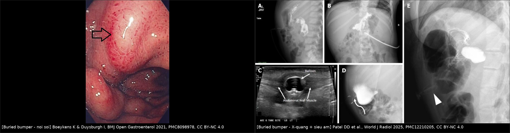
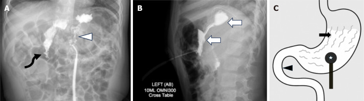
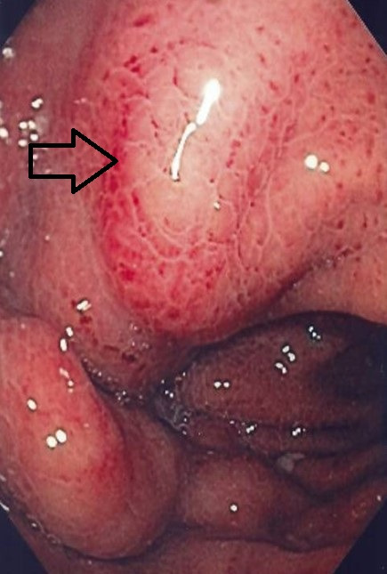
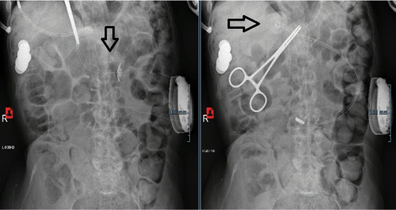
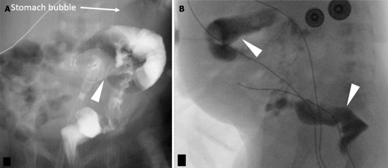

083 — Nuôi ăn qua sonde & mở thông dạ dày ở trẻ: biến chứng mạn, kiểm tra vị trí và xử trí / Long-term enteral feeding tubes in children
Tags: pattern:bien-chung-ong-nuoi vung:da-day vung:thanh-bung score:ASPEN protocol:kiem-tra-vi-tri protocol:contrast-study incidentaloma:pneumoperitoneum incidentaloma:buried-bumper
Mức chắc chắn (certainty): tổng hợp y văn (literature synthesis) — số liệu từ các đoàn hệ nhi khoa và hướng dẫn ASPEN 2026 truy cập mở (PMC10187850, PMC12375655, PMC11720959, PMC12210205, PMC13169229, PMC11959107); ảnh từ bài CC BY/CC BY-NC; không suy diễn ngoài nguồn.
Bài này tập trung "chuyện sau khi đã có ống": biến chứng sớm/muộn, đọc hình ảnh khi ống trục trặc, và ngưỡng xử trí. Cách đặt sonde dạ dày – kiểm tra vị trí lần đầu và viêm phổi hít sặc đã có ở 081; chỉ định chuyển từ ăn miệng sang ống ở trẻ bại não ở 082.
1. Tổng quan bệnh học – cơ chế hình ảnh
- Chỉ định & lựa chọn ống: nuôi qua ống khi trẻ không thể ăn miệng an toàn/đủ nhu cầu. Khi dự kiến cần > 3–6 tuần, mở thông dạ dày (gastrostomy) được ưu tiên hơn sonde mũi–dạ dày (nasogastric tube, NGT) vì ổn định hơn và ít biến chứng mũi–hầu (PMC10187850).
- NGT/NJ (nasojejunal): đặt qua mũi; NGT dùng ngắn hạn, NJ khi cần nuôi sau môn vị.
- PEG (percutaneous endoscopic gastrostomy): ống qua da vào dạ dày, có bumper/balloon trong lòng dạ dày giữ lại.
- Button (low-profile balloon gastrostomy tube, BGT): ống thấp sát da, bóng nước trong dạ dày — thẩm mỹ hơn, nhưng dễ bị chôn bumper (buried bumper) nếu da dày lên/tăng cân.
- PEJ/GJ, mở thông dạ dày–hỗng tràng, phẫu thuật: khi cần nuôi hỗng tràng hoặc thất bại PEG.
- TẠI SAO hình ảnh đọc được (vật lý):
- Ống và bumper/balloon cản tia X → thấy trên X-quang bụng; bóng chứa nước → thấy được trên siêu âm dưới dạng cấu trúc echo trống, có thành, nằm trong lòng dạ dày.
- X-quang cản quang: bơm cản quang qua ống → thấy đường viền dạ dày và các nếp niêm mạc (rugae), và thuốc xuống tá tràng; nếu cản quang ngoài lòng dạ dày hoặc đổ vào đại tràng → sai vị trí.
- CT: xác định ống đi xuyên qua gan/đại tràng/tá tràng hoặc tụ dịch, áp-xe thành bụng.
- Cơ chế từng biến chứng (mô bệnh – vật lý):
- Buried bumper (chôn bumper): áp lực kéo dài giữa bumper trong lòng dạ dày và đĩa ngoài da → hoại tử áp lực thành dạ dày/thành bụng, bumper lún vào mô; nguy cơ tăng khi tăng cân nhanh, dùng button thấp, đĩa ngoài quá chặt, theo dõi kém.
- Nhiễm trùng lỗ mở (peristomal infection): ẩm ướt + cọ xát + vi khuẩn da/miệng → viêm đỏ, chảy mủ; thường trong 30 ngày đầu.
- Rò tiêu hóa–da (gastrocutaneous fistula): đường hầm đã biểu mô hóa → không tự đóng sau rút ống; dịch dạ dày chảy ra da.
- Hội chứng nuôi ăn lại (refeeding syndrome): nạp glucose → insulin tăng → K, Mg, phosphate vào nội bào → hạ phosphate máu (nguy hiểm nhất), loạn nhịp, yếu cơ, phù; xảy ra trong 1–3 tuần đầu nuôi lại.
- Tiêu chảy do nuôi ống: tải thẩm thấu cao, thiếu chất xơ, kháng sinh, tốc độ bơm nhanh.
- Pneumoperitoneum sau PEG: khí vào ổ bụng khi đặt/qua đường hầm; thường tự hết nhưng thể vừa/lớn có thể là dấu hiệu thủng.
- Ngưỡng định lượng chốt:
- Biến chứng nặng 14,4%, nhẹ 85,6% trong 202 biến cố ở 124 trẻ (PMC10187850); buried bumper 10,47% ở 86 trẻ PEG (PMC12375655); biến chứng nhẹ 68% (chủ yếu mô hạt/đỏ da) ở 81 trẻ (PMC11720959).
- Pneumoperitoneum 4,6% sau PEG, tự hết trong 2–18 ngày; 2/9 ca vừa/lớn tử vong (PMC4641857).
- Refeeding syndrome 10,4%, hạ phosphate < 0,8 mmol/L 13,7%, giảm phosphate < 1,2 mmol/L 46,6% (PMC11959107); ở trẻ suy dinh dưỡng cấp nặng, tỉ lệ 8,7–34,8% (PMC12468821).
- Thay bóng lần đầu: sau 6–12 tuần (ASPEN 2026, PMC13169229).
- Kiểm tra ống bằng X-quang 2 tư thế có cản quang: độ chính xác 97,8%, NPV 99,5%, không xác định 5,7% (PMC12766352).

Trái (A): G-tube chuẩn có đĩa ngoài, cổng nuôi/thuốc và bóng; phải (B): button thấp (low-profile) — bóng nằm trong dạ dày, đầu ống sát da. Nguồn: Patel DD et al., World J Radiol 2025, PMC12210205, Fig. 1, CC BY-NC 4.0.2. Mẫu hình + chẩn đoán phân biệt theo thời điểm (Gamut)
- Biến chứng sớm (≤ 30 ngày): nhiễm trùng/đỏ lỗ mở, rò dịch quanh ống, chảy máu, liệt ruột, pneumoperitoneum, sai vị trí (trong ổ bụng, đại tràng, gan), sặc trong lúc nuôi.
- Biến chứng muộn (> 30 ngày): buried bumper, tuột ống, di trú ống (vào tá tràng → tắc tá tràng), tắc ống, mô hạt, rò tiêu hóa–da, tắc đường ra dạ dày do bóng quá căng, di căn tại chỗ (hiếm), hẹp/rò đường hầm.
- Gamut theo cơ chế:
- Áp lực: buried bumper, loét/hoại tử da do đĩa quá chặt.
- Co kéo: tuột ống khi thay/giật, hở đường hầm.
- Vị trí: đặt nhầm vào đại tràng, gan, ổ bụng; di trú vào tá tràng.
- Nhiễm: viêm da quanh lỗ, áp-xe, nhiễm trùng huyết.
- Chuyển hóa: refeeding, tiêu chảy, mất nước.
- Gợi nhớ "BURIED": Bleeding (chảy máu) · Ulcer/buried bumper · Refilling/occlusion (tắc) · Infection · Escape (rò dịch) · Dislodgement (tuột ống).
3. Bảng so sánh phân biệt (ma trận đối chiếu)
| Thực thể (entity) | Hình ảnh điển hình | Chốt vào (rule-in) | Chốt loại (rule-out) | Gợi ý xác nhận |
|---|---|---|---|---|
| Buried bumper (chôn bumper) | Nội soi: bumper/đĩa lún dưới niêm mạc, không thấy bóng; X-quang: bóng không di chuyển theo dạ dày; siêu âm: bóng nằm trong thành bụng/cơ | Bóng không nằm trong lòng dạ dày + đau/chảy dịch tại lỗ | Bóng thấy rõ trong lòng dạ dày, ống trượt tự do | Siêu âm tại giường + nội soi; CT nếu nghi áp-xe |
| Tuột ống (dislodgement) | Ống không còn ở vị trí, lỗ mở còn; bụng chướng nếu bơm nhầm ổ bụng | Ống ra ngoài/không rút được dịch dạ dày | Ống còn cố định, hút ra dịch dạ dày | Kiểm tra lâm sàng; hút dịch → siêu âm → cản quang |
| Di trú vào tá tràng | Bóng/ống đi qua môn vị xuống tá tràng, bụng chướng, nôn dịch mật | Đầu ống/bóng ở vùng tá tràng trên X-quang | Đầu ống ở thân dạ dày, dưới cơ hoành trái | X-quang bụng; kéo lại và kiểm tra |
| Đặt nhầm vào đại tràng | Cản quang đổ vào khung đại tràng (có haustra), phân quanh ống | Cản quang vào đại tràng + phân quanh lỗ | Cản quang chỉ trong dạ dày, xuống tá tràng | X-quang cản quang 2 tư thế, CT |
| Nhiễm trùng lỗ mở | Đỏ, sưng, chảy mủ quanh lỗ; mô hạt có thể kèm | Mủ + đau + sốt | Chỉ mô hạt hồng, không mủ | Cấy dịch, siêu âm tìm áp-xe |
| Mô hạt (granulation tissue) | Nốt hồng ướt, dễ chảy máu quanh lỗ | Mô hạt thừa, không sốt | Mủ/tấy đỏ lan → nhiễm trùng | Chăm sóc da, bạc nitrat nếu cần |
| Rò tiêu hóa–da kéo dài | Dịch dạ dày chảy qua lỗ sau rút ống nhiều tuần | Rò dịch kéo dài ≥ 4 tuần (ngưỡng quy ước) | Lỗ khô và tự đóng trong vài ngày | Nội soi/CT đường hầm; can thiệp đóng |
| Refeeding syndrome | Không có hình ảnh đặc hiệu; hạ phosphate/K/Mg, phù, loạn nhịp | Phosphate < 0,8 mmol/L sau khi bắt đầu nuôi | Điện giải bình thường, không triệu chứng | Xét nghiệm điện giải hằng ngày tuần đầu |

Trái: nội soi — bumper lún dưới niêm mạc, mũi tên chỉ chỗ ống thoát ra (buried bumper). Phải: X-quang cản quang + siêu âm — bóng nằm trong thành bụng, không thấy trong lòng dạ dày. Nguồn: Boeykens K & Duysburgh I, BMJ Open Gastroenterol 2021, PMC8098978, Fig. 1 (CC BY-NC 4.0); Patel DD et al., World J Radiol 2025, PMC12210205, Fig. 7 (CC BY-NC 4.0). Ảnh ghép letterbox.4. Protocol chụp + kiểm tra vị trí + ngưỡng xử trí
4.1 Kiểm tra ống mới thay (quan trọng nhất trong thực hành)
- Bước 1 — hút dịch dạ dày: có dịch dạ dày (pH thấp) là bằng chứng ủng hộ vị trí trong dạ dày.
- Bước 2 — nếu không hút được dịch: siêu âm tại giường (POCUS) bơm nước/normal saline vào bóng để xác nhận bóng trong dạ dày. Trong nghiên cứu 118 lần thay ống, 13,6% siêu âm không xác định được; 4/16 ca không xác định được xác nhận ống nằm trong đường hầm thành bụng bằng cản quang (PMC13169229).
- Bước 3 — nếu siêu âm không xác định: X-quang cản quang. Protocol X-quang bụng 2 tư thế có cản quang đạt độ chính xác 97,8%, độ nhạy 90,0%, độ đặc hiệu 98,2%, NPV 99,5%; 5,7% ca không xác định (PMC12766352).
- Thời điểm thay bóng lần đầu: 6–12 tuần sau đặt (ASPEN 2026) — chờ đường hầm trưởng thành để tránh đặt nhầm vào ổ bụng (PMC13169229).
- Sau thay ống: không cho ăn qua ống cho tới khi xác nhận vị trí; ghi lại chiều dài ống và thể tích bóng theo khuyến cáo của nhà sản xuất.

X-quang cản quang bình thường: thuốc phủ đường viền dạ dày và các nếp niêm mạc (mũi tên), xuống tá tràng (mũi tên cong) — không có thuốc ngoài lòng dạ dày. (C): sơ đồ tương ứng. Nguồn: Patel DD et al., World J Radiol 2025, PMC12210205, Fig. 2, CC BY-NC 4.0.4.2 Chọn ống & theo dõi
- NGT: dùng ngắn hạn; băng dính thường không giữ được 40% ống (tuột), nasal bridle giảm tuột 57% (HR 6,3) và giảm tuột từ 88% → 31% sau 30 ngày (PMC12080054).
- PEG vs phẫu thuật: tỉ lệ biến chứng và can thiệp lại tương đương; PEG có xu hướng cải thiện cân nặng sớm hơn (PMC13262180).
- Buried bumper: theo dõi bằng đo chiều dài ống ngoài da mỗi lần thăm khám; đĩa ngoài không quá chặt, vệ sinh và lau khô lỗ mở.
- Tắc ống: bơm nước ấm, tránh dùng vật cứng; thuốc nghiền kỹ, không trộn cùng nhau.
4.3 Refeeding và biến chứng chuyển hóa
- Sàng lọc nguy cơ: sụt cân nhanh, BMI thấp, ăn rất ít > 5 ngày, bệnh nền thần kinh/ung thư.
- Khởi đầu thấp, tăng dần (nguyên tắc của protocol nuôi lại); xét nghiệm điện giải (phosphate, K, Mg) định kỳ — hạ kali máu thường xuất hiện ngày 4–17 (PMC11959107).
- Ngưỡng cảnh báo: phosphate < 0,8 mmol/L = hạ phosphate thực sự; < 1,2 mmol/L gặp ở 46,6% trẻ trong 3 tuần đầu (PMC11959107) — theo dõi sát, bổ sung phosphate/K/Mg theo hướng dẫn.
- Dấu hiệu nguy hiểm: loạn nhịp, suy tim, co giật, yếu cơ, phù — ngừng/tăng chậm, xử trí cấp cứu.
flowchart TD
A["Ống nuôi có vấn đề"] --> B{"Ống còn cố định?"}
B -->|Không, tuột| C["Đánh giá đường hầm: non hay trưởng thành"]
C --> D["Đặt lại ống + xác nhận: hút dịch → siêu âm → cản quang"]
B -->|Còn| E{"Hút được dịch dạ dày?"}
E -->|Có| F["Tiếp tục nuôi, theo dõi"]
E -->|Không| G["Siêu âm tại giường"]
G -->|Xác định bóng trong dạ dày| F
G -->|Không xác định| H["X-quang cản quang 2 tư thế"]
H -->|Bình thường| F
H -->|Sai vị trí| I["Rút ống, xử trí theo biến chứng"]
5. Biến thể bình thường và cạm bẫy
- Pneumoperitoneum sau PEG không luôn lành tính: gặp 4,6%, tự hết trong 2–18 ngày, nhưng 2/9 ca vừa/lớn tử vong — thể vừa/lớn + sốt/đau bụng/tăng bạch cầu phải loại trừ thủng (PMC4641857).
- Bóng quá căng có thể chèn môn vị gây tắc dạ dày (gastric outlet obstruction) — hình ảnh X-quang cản quang cho thấy cản quang ứ lại; xử trí xả bớt bóng.
- Cản quang trong đại tràng dễ nhầm là dạ dày: tìm haustra, phân trong lòng, và đường đi của ống; nếu nghi ngờ → CT (PMC12210205).
- Buried bumper dễ bị bỏ qua vì ống vẫn "hút được" một ít dịch; đau/chảy dịch tái diễn + bóng không thấy trên X-quang là dấu hiệu cảnh báo.
- Mô hạt vs nhiễm trùng: mô hạt hồng, mềm, không sốt; nhiễm trùng có mủ, tấy đỏ lan, đau, sốt — cấy trước khi dùng kháng sinh.
- Rò tiêu hóa–da kéo dài thường do đường hầm đã biểu mô hóa sau đặt ống lâu; đừng chờ tự đóng mãi.
- Không quy mọi tiêu chảy cho "sữa": kiểm tra tốc độ bơm, nồng độ, kháng sinh, nhiễm Clostridioides difficile.
- Trẻ có ống vẫn có thể sặc (dịch dạ dày trào ngược, sặc nước bọt) — ống không thay thế đánh giá nuốt.
6. Tự lượng giá — Blind Quiz
Ca 1 — Bé gái 5 tuổi, button dạ dày 8 tháng, đau và chảy dịch tại lỗ mở (bệnh cảnh giả định mô phỏng hình ảnh nguồn). Nội soi dạ dày:

- Câu hỏi: Mũi tên chỉ gì? Vì sao bóng không thấy trong lòng dạ dày? Xử trí?
Bấm để hiện đáp án (findings + chẩn đoán)
- Dấu hiệu: bumper/đĩa lún dưới niêm mạc, chỉ còn lỗ ống thoát ra — buried bumper syndrome. Bóng bị kéo vào thành dạ dày/thành bụng nên không thấy trong lòng dạ dày.
- Xử trí: ngừng nuôi qua ống, xác nhận bằng siêu âm/CT, rút/loại bỏ bumper (nội soi hoặc phẫu thuật), đặt lại ống ở vị trí mới; dự phòng bằng đĩa ngoài không quá chặt + theo dõi cân nặng.
- Nguồn ảnh: Boeykens K & Duysburgh I, BMJ Open Gastroenterol 2021, PMC8098978, Fig. 1, CC BY-NC 4.0.
Ca 2 — Bé trai 3 tuổi, PEG 1 năm, bụng chướng và nôn (bệnh cảnh giả định mô phỏng hình ảnh nguồn). X-quang bụng:

- Câu hỏi: Ống/bóng đã đi đâu? Biến chứng gì? Làm gì ngay?
Bấm để hiện đáp án
- Dấu hiệu: PEG di trú vào tá tràng (trái) gây tắc đường ra dạ dày; sau khi kéo lại vị trí ban đầu (phải) thì hết tắc.
- Xử trí: kéo ống về vị trí ban đầu (như ca nguồn), xác nhận bằng X-quang; nếu tái di trú → đổi loại ống/button có cơ cấu giữ tốt hơn.
- Nguồn ảnh: Boeykens K & Duysburgh I, BMJ Open Gastroenterol 2021, PMC8098978, Fig. 5, CC BY-NC 4.0.
Ca 3 — Sơ sinh 1 tháng, đặt PEG 5 ngày, dịch nâu sẫm quanh ống. X-quang cản quang:

- Câu hỏi: Cản quang đổ vào cấu trúc nào? Chẩn đoán? Vì sao nguy hiểm?
Bấm để hiện đáp án
- Dấu hiệu: cản quang đổ vào đại tràng (thấy haustra, khung đại tràng) — đặt nhầm ống xuyên đại tràng (colonic gastrostomy).
- Nguy hiểm: nuôi qua ống vào đại tràng → tiêu chảy, nhiễm trùng, rò đại tràng–da, viêm phúc mạc; cần rút ống, kháng sinh, và đặt lại đường vào dạ dày (nội soi/phẫu thuật).
- Nguồn ảnh: Patel DD et al., World J Radiol 2025, PMC12210205, Fig. 11, CC BY-NC 4.0.
Bài liên quan chéo
- 081 – Sặc & rối loạn nuốt (sonde dạ dày, VFSS/FEES)
- 082 – Bại não & an toàn nuốt ở trẻ
- 015 – Ống/dây ICU
- 646 – Hội chứng khoang bụng ở trẻ: đo áp lực bàng quang, phân độ I–IV
Ảnh
images/083_nuoi-an-qua-sonde_Anh_PMC12210205-Fig1.jpg— G-tube vs button, CC BY-NC 4.0.images/083_nuoi-an-qua-sonde_NoiSoi_PMC8098978-Fig1.jpg— buried bumper, CC BY-NC 4.0.images/083_nuoi-an-qua-sonde_US-XR_PMC12210205-Fig7.jpg— buried bumper trên X-quang/US, CC BY-NC 4.0.images/083_nuoi-an-qua-sonde_XR_PMC8098978-Fig5.jpg— PEG di trú vào tá tràng, CC BY-NC 4.0.images/083_nuoi-an-qua-sonde_XR_PMC12210205-Fig2.jpg— kiểm tra cản quang bình thường, CC BY-NC 4.0.images/083_nuoi-an-qua-sonde_XR_PMC12210205-Fig11.jpg— đặt nhầm vào đại tràng, CC BY-NC 4.0.images/composite_buried-bumper.jpg— ảnh ghép đối chiếu.- Nguồn + giấy phép từng ảnh:
images/CREDITS.md.
Không dùng để chẩn đoán độc lập khi chưa có người hướng dẫn.